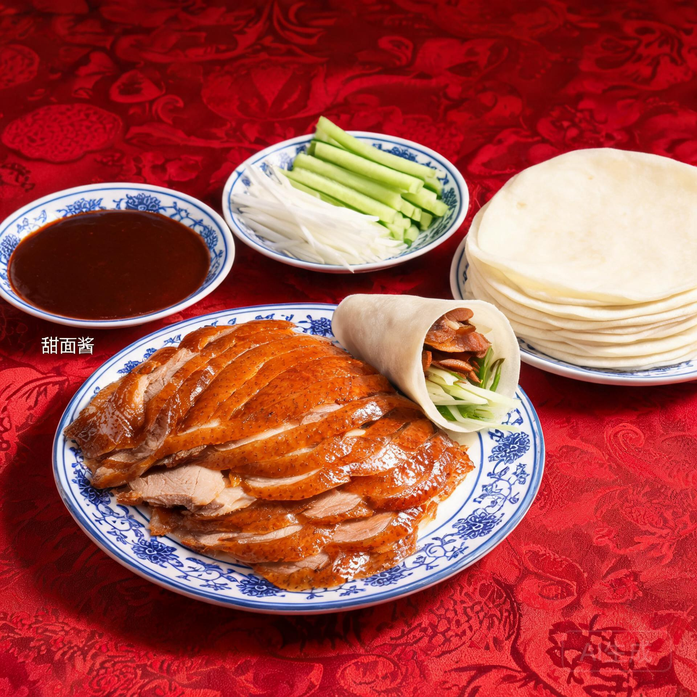

🍜 中华美食卡片
← 左滑下一道 · 右滑上一道 → 阈值 60px · 冷却 300ms
已经是第一张啦

京菜 · 招牌
北京烤鸭
皮脆肉嫩，配荷叶饼、甜面酱、葱丝黄瓜条。皮片 108 片，片片均匀。
川菜 · 麻辣
麻婆豆腐
麻辣鲜香嫩烫。嫩豆腐配郫县豆瓣酱、花椒粒、牛肉末，红油红亮，下饭神器。
粤菜 · 清蒸
清蒸鲈鱼
整条鲈鱼清蒸，葱姜丝点缀，蒸鱼豉油提鲜。肉质细嫩，原汁原味。

浙菜 · 家常
东坡肉
方方正正一块肉，色泽红亮，肥而不腻。青花瓷盘装，配青菜点缀。
第 1 / 4 张